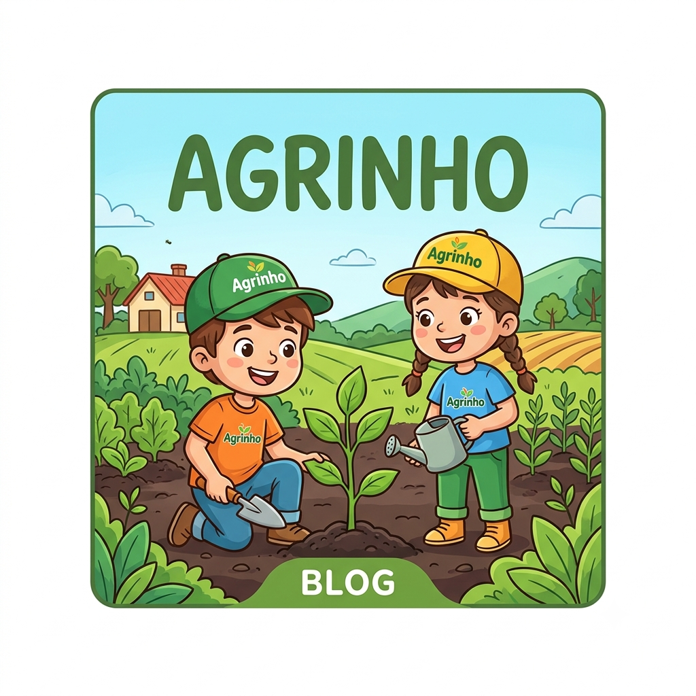

Meu primeiro post
Por:Jonathan Araujo
Boas-vindas ao meu blog! Aqui vou falar curiosides sobre o agrinho.
Como o Programa Funciona?Foco Educacional: O programa utiliza a "pedagogia da pesquisa". Os professores recebem material didático exclusivo para abordar assuntos como meio ambiente, saúde, inovação e a importância do agronegócio.
Concurso Cultural: A iniciativa promove um grande concurso anual onde os alunos participam desenvolvendo desenhos, redações, vídeos, podcasts e até projetos de robótica. Professores e escolas também são premiados por seus relatos de práticas pedagógicas
Porque é importante?
Ele é fundamental para levar educação, cidadania, consciência ambiental e noções de agronegócio às escolas, transformando crianças e adolescentes em agentes de mudança em suas comunidades.

Agrinho e seus beneficios
O Programa Agrinho é uma das maiores iniciativas de responsabilidade social do Brasil, criado pelo Sistema FAEP/SENAR. Voltado para escolas públicas e privadas, ele promove a educação ambiental, a cidadania e o empreendedorismo entre crianças e adolescentes, fortalecendo a conexão e o desenvolvimento sustentável entre o campo e a cidade.